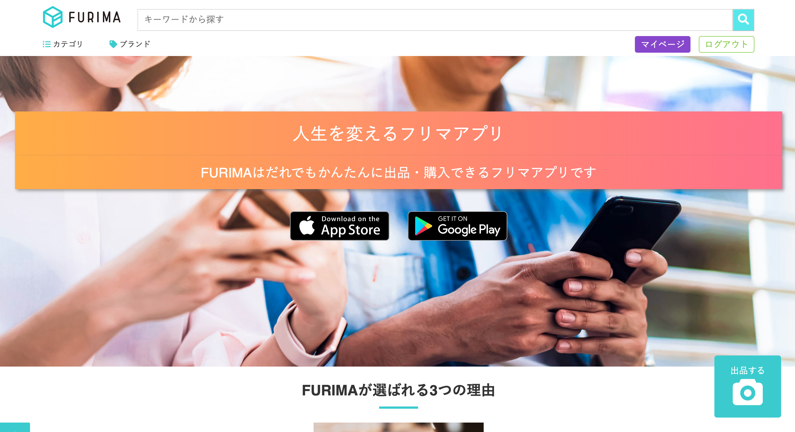

制作物
個人開発
Doc-style
画像をクリックするとGithubへ遷移します

HTML/CSS(SCSS), jQuery, Ruby on Rails (AWS デプロイ済)
Portfolio
画像をクリックするとGithubへ遷移します

HTML/CSS (Heroku デプロイ済)
チーム開発
freemarket_sample_68e
画像をクリックするとGithubへ遷移します
HTML/CSS(SCSS),haml, jQuery, Ruby on Rails (AWS デプロイ済)